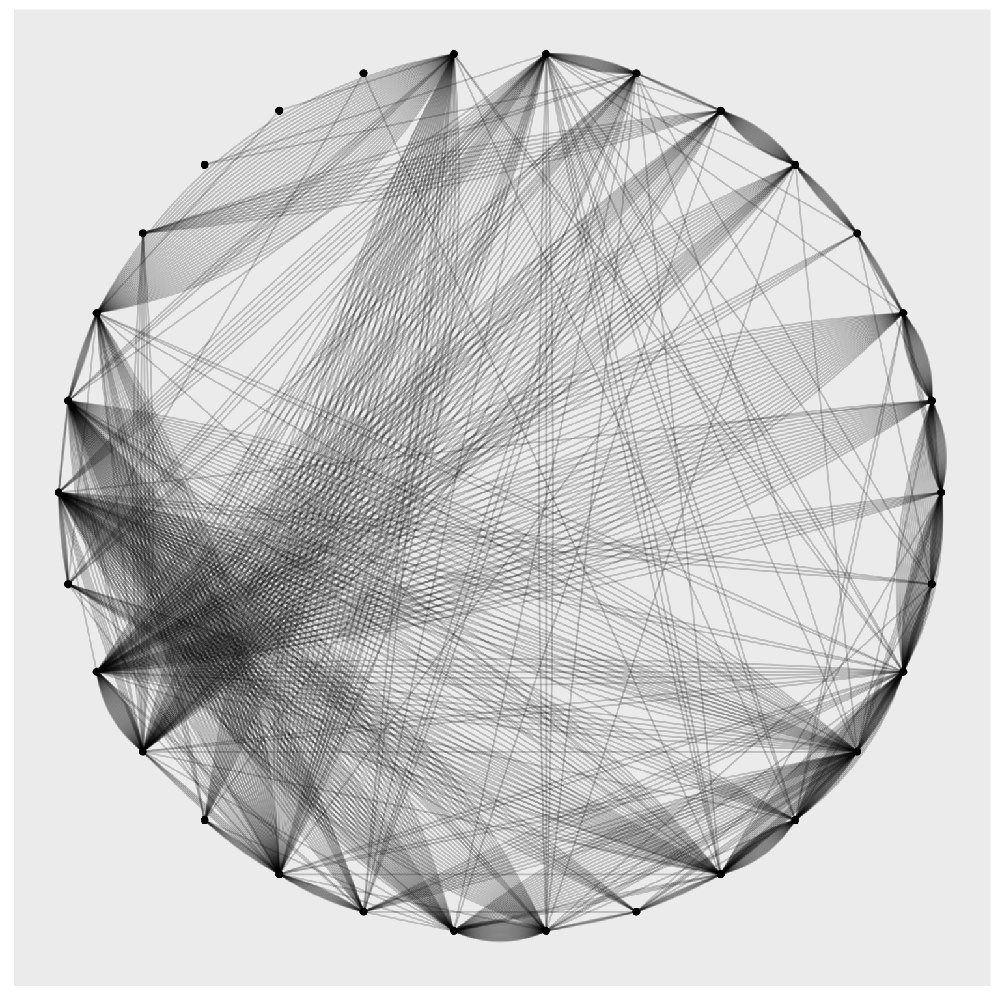
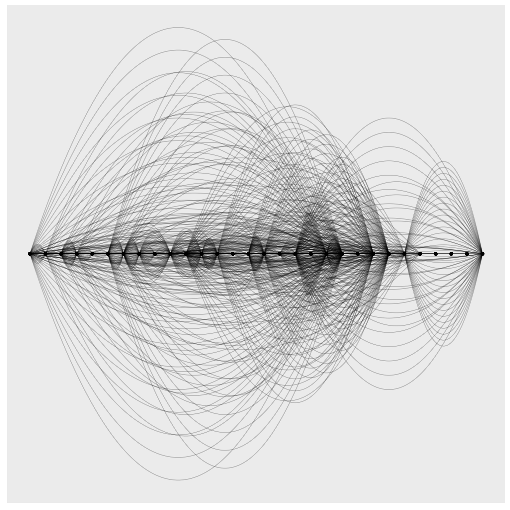
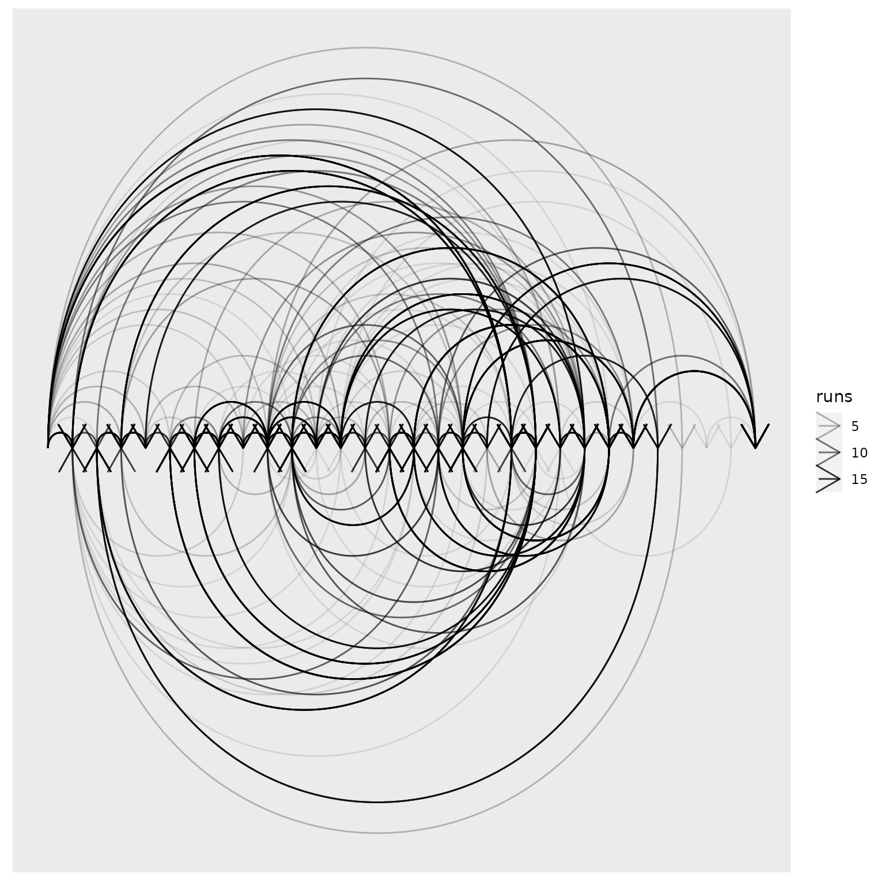
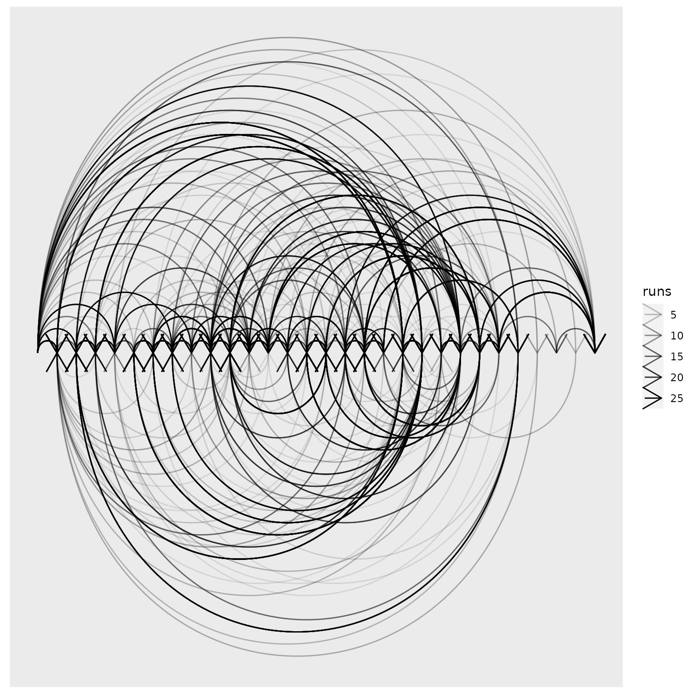

route-graph
route-graph.Rmdextract bits I need
long_routes <-
sio_df %>%
select(run_id, supermetroid_label, realtime_end_ms, realtime_start_ms)
#> Error in `select()`:
#> ! Can't subset columns that don't exist.
#> ✖ Column `supermetroid_label` doesn't exist.
head(long_routes)
#> Error in eval(expr, envir, enclos): object 'long_routes' not found
# take a look at a dataset from ggraph
highschool %>% head()
#> from to year
#> 1 1 14 1957
#> 2 1 15 1957
#> 3 1 21 1957
#> 4 1 54 1957
#> 5 1 55 1957
#> 6 2 21 1957Need to use realtime_start_ms and
realtime_end_ms to figure out which one is from and to?
Hmmm, or just use itself.
# take a look at one run
run_events <-
long_routes %>%
filter(run_id == last(run_id),
!is.na(supermetroid_label)) %>%
arrange(realtime_start_ms) %>%
pull(supermetroid_label)
#> Error in eval(expr, envir, enclos): object 'long_routes' not found
# and create a from, to df
tibble(
from = c("start", run_events),
to = c(run_events, "end")
)
#> Error: object 'run_events' not foundCreate a from-to dataframe for each route
route_from_to_df <- function(this_route, this_route_id) {
route_events <- this_route$supermetroid_label
# and create a from, to df
tibble(from = c("start", route_events),
to = c(route_events, "end"))
}
route_from_to_df(distinct_routes$route[[3]], distinct_routes$route_id[[3]])
#> # A tibble: 13 × 2
#> from to
#> <chr> <chr>
#> 1 start bombs
#> 2 bombs varia suit
#> 3 varia suit speed booster
#> 4 speed booster grapple beam
#> 5 grapple beam phantoon
#> 6 phantoon gravity suit
#> 7 gravity suit spore spawn supers
#> 8 spore spawn supers space jump
#> 9 space jump plasma beam
#> 10 plasma beam screw attack
#> 11 screw attack x-ray
#> 12 x-ray golden 4
#> 13 golden 4 end
# now can apply to df
from_to_df <-
distinct_routes %>%
mutate(
runs = map_int(run_id, nrow),
from_to = map2(route, route_id, route_from_to_df)
) %>%
select(from_to, route_id, runs) %>%
unnest(from_to)
head(from_to_df)
#> # A tibble: 6 × 4
#> from to route_id runs
#> <chr> <chr> <chr> <int>
#> 1 start morph ball route 1 9
#> 2 morph ball charge beam route 1 9
#> 3 charge beam spazer route 1 9
#> 4 spazer kraid route 1 9
#> 5 kraid hi-jump boots route 1 9
#> 6 hi-jump boots speed booster route 1 9
usethis::use_data(from_to_df)Create a digraphs that describe what routes players take
from_to_gg <-
from_to_df %>%
as_tbl_graph()Too messy
from_to_gg %>%
ggraph() +
geom_edge_fan(aes(size = runs))
#> Using "stress" as default layout
#> Warning in geom_edge_fan(aes(size = runs)): Ignoring unknown aesthetics:
#> edge_size
#> Warning: Using the `size` aesthetic in this geom was deprecated in ggplot2 3.4.0.
#> ℹ Please use `linewidth` in the `default_aes` field and elsewhere instead.
#> This warning is displayed once every 8 hours.
#> Call `lifecycle::last_lifecycle_warnings()` to see where this warning was
#> generated.
Need order
from_to_gg %>%
ggraph(layout = "linear", circular = TRUE) +
geom_edge_fan(aes(size = runs), alpha = 0.2) +
geom_node_point(aes(colour = ))
#> Warning in geom_edge_fan(aes(size = runs), alpha = 0.2): Ignoring
#> unknown aesthetics: edge_size
Need direction
from_to_gg %>%
ggraph(layout = "linear") +
geom_edge_fan(aes(size = runs), alpha = 0.2) +
geom_node_point()
#> Warning in geom_edge_fan(aes(size = runs), alpha = 0.2): Ignoring
#> unknown aesthetics: edge_size
Too many nodes for EDA
from_to_gg %>%
ggraph(layout = "linear") +
geom_edge_arc(arrow = arrow(), aes(alpha = runs)) 